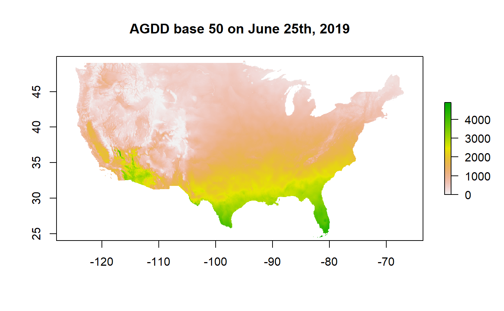
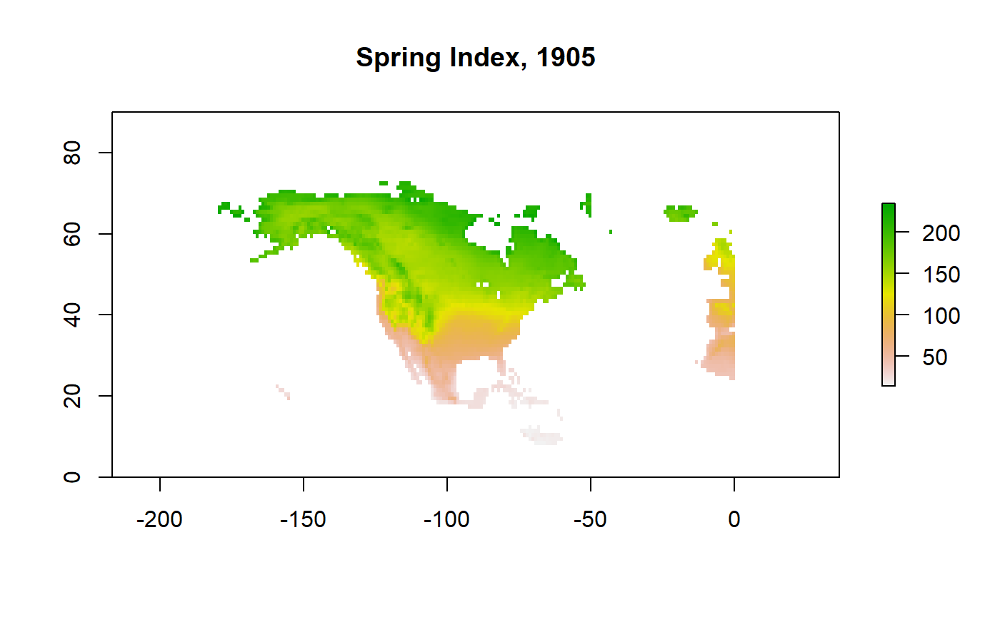
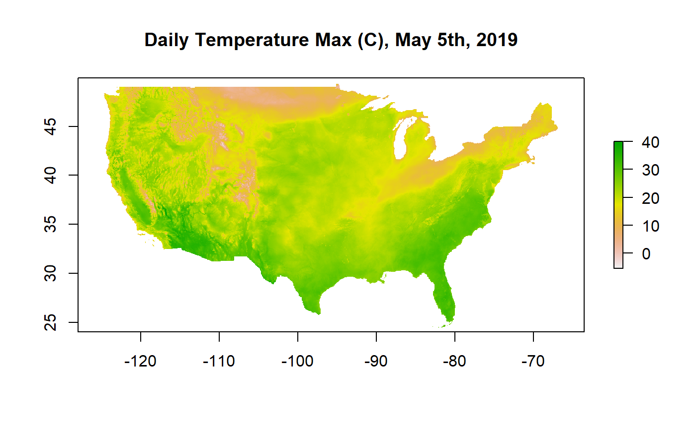

vignettes/VI_geospatial.Rmd
VI_geospatial.RmdUSA-NPN provides phenology-relevant climate data in raster format. There are two main suites of products in this category: Accumulated Growing Degree Days and Extended Spring Indices. Accumulated Growing Degree Days and the Extended Spring Indices are both representations of accumulated temperature. As accumulated winter and spring heat drives many spring season phenological events in much of the country, these products can be used to better understand patterns in the current and historical timing of these events across the landscape. For a complete description of the USA-NPN approach and notes for working with each data type see the Open File Report on USA-NPN Gridded Data.
Both suites are available as:
All of these products can be downloaded using the npn_download_geospatial call. There is a number of other products and permutations of the above listed AGDD and Spring Index products, so you can get a complete list of available layers and additional details about them including resolution, extent and the abstract/layer description.
layers <- npn_get_layer_details()The following sections describe how to parameterize calls for both AGDD and Spring Index layers. These calls result in raster data sets for the contiguous United States.
If you are interested in how many GDDs had accumulated when the red maple in your backyard leafed out, or what day the Spring Index requirements for leaf out were met for your location, you may wish to query the layers for these values, based on location and date. There are two ways to accomplish this, using the npn_get_point_data function which works for all layers and the npn_get_AGDD_point_data function, which only works for AGDD layers and provides a more precise result.
npn_get_agdd_point_data(
'gdd:agdd_50f',
'38',
'-90',
'2019-02-25'
)This returns a value of 7.64098 GDD, base 50F, for the coordinates 38 north, -90 west on February 25th, 2019.
npn_get_point_data(
'si-x:lilac_bloom_ncep',
'30',
'-90',
'2019-02-25'
)This returns a value for lilac bloom of day 48, for the coordinates 30 north, -90 west, as of February 25th, 2019.
The above mentioned AGDD products use base temperatures of 32F or 50F and are managed through WCS services. There is also a function to get dynamic AGDD calculations based on a user defined base temperature and a number of other parameters.
custom_agdd_raster <- npn_get_custom_agdd_raster(
method = 'double-sine',
climate_data_source = 'NCEP',
temp_unit = 'fahrenheit',
start_date = '2019-01-01',
end_date = '2019-05-10',
base_temp = 20,
upper_threshold = 90
)Heat accumulation is commonly used as a way of predicting the timing of phenological transitions in plants and animals, including when plants exhibit leaf out, flowering, or fruit ripening, or when insects emerge from dormancy. This is typically expressed as accumulated heat units, either Growing Degree Hours or Growing Degree Days. Growing degree day thresholds have been established for many species, and are commonly used in agriculture, horticulture, and pest management to schedule activities such as harvesting, pesticide treatment, and flower collection. The USA-NPN is currently generating Accumulated Growing Degree Days (AGDD) rasters using a January 1 start date, calculated using simple averaging. These are available calculated using two base temperatures, 32 degrees Fahrenheit (F) and 50 F.
When querying certain layers, the underlying data is agnostic about the specific year, and in these cases it makes sense to use the day of year to request data, since that will provide a standardized result, (i.e., April 1st is day 91 in some years and day 92 in others).
npn_download_geospatial(
'gdd:30yr_avg_agdd_50f',
95
)But if you’re looking at a specific year, such as a current year layer, it makes sense to use a specific calendar date (formatted YYYY-MM-DD). It’s also possible to save the raster directly to file instead of loading it into memory.
npn_download_geospatial(
'gdd:agdd',
'2018-05-05',
output_path='20180505-agdd-value.tiff'
)In the case of the historic Spring Index layers, however, the product represents the overall outcome for the entire year, so while the year component of the date matters, the month and day do not. In this case, specify January 1 as the month and date.
npn_download_geospatial(
"si-x:average_bloom_prism",
"1995-01-01"
)The dimension.range value, returned in the npn_get_layer_details() function, clarifies the full set of applicable dates for each layer.
Of course, it’s also easy to grab raster data and load it into a visual plot as in this example, showing a map of AGDD base 50 on 2019-06-25:
AGDDJun2019<-npn_download_geospatial(
"gdd:agdd_50f",
"2019-06-25"
)## [1] "https://geoserver.usanpn.org/geoserver/wcs?service=WCS&version=2.0.1&request=GetCoverage&format=geotiff&coverageId=gdd:agdd_50f&SUBSET=time(\"2019-06-25T00:00:00.000Z\")"
plot(
AGDDJun2019,
main = "AGDD base 50 on June 25th, 2019"
)
An important layer to know of is the 30 year average for AGDD products. This is useful for many comparative analyses. This layer takes DOY as the date input, since it’s the average AGDD value for each day of year for 1981 - 2010.
average_30yr <- npn_download_geospatial(
"gdd:30yr_avg_agdd",
45
)The Extended Spring Indices are mathematical models that predict the “start of spring” (timing of first leaf or first bloom) at a particular location. These models were constructed using historical observations of the timing of first leaf and first bloom in a cloned lilac cultivar (Syringa X chinensis ‘Red Rothomagensis’) and two cloned honeysuckle cultivars (Lonicera tatarica L. ‘Arnold Red’ and Lonicera korolkowii Stapf, also known as ‘Zabelii’), which were selected based on the availability of historical observations from across a wide geographic area. Primary inputs to the model are temperature and weather events, beginning January 1 of each year. The model outputs are first leaf and first bloom date for a given location.
Data for the Spring Index is available through an enumeration of layers that represents each of the three sub-models as well as an ‘average’ model which represents the aggregation of the three sub-models. These layers are further enumerated by both of the represented phenophases, leaf and bloom. In the example below, first the layer representing only the Arnold Red model for 1987 is retrieved, while the second function call gets the model averaging all three of the models for the same year.
npn_download_geospatial(
"si-x:arnoldred_bloom_prism",
"1987-01-01"
)
average_model <- npn_download_geospatial(
"si-x:average_bloom_prism",
"1987-01-01"
)The Spring Indices are also unique in that the algorithm has been run against the BEST climate data set, so historic data going back to 1880 is available.
BESTSIxData1905 <- npn_download_geospatial(
'si-x:average_bloom_best',
'1905-01-01'
)## [1] "https://geoserver.usanpn.org/geoserver/wcs?service=WCS&version=2.0.1&request=GetCoverage&format=geotiff&coverageId=si-x:average_bloom_best&SUBSET=time(\"1905-01-01T00:00:00.000Z\")"
NAvalue(BESTSIxData1905) <- -9999
plot(
BESTSIxData1905,
main = "Spring Index, 1905"
)
Besides the AGDD and Spring Index layers there are a number of other useful layers available through these services, including daily temperature minimum and maximums and aggregated MODISv6 phenometrics.
The daily temperature minimum and maximum values are the underlying climate data used to generate current year AGDD and Spring Index maps. These data are generated by NOAA’s National Centers for Environmental Prediction (NCEP) and are reserved through NPN’s geospatial services.
daily_max_20190505 <- npn_download_geospatial(
'climate:tmax',
'2019-05-05'
)## [1] "https://geoserver.usanpn.org/geoserver/wcs?service=WCS&version=2.0.1&request=GetCoverage&format=geotiff&coverageId=climate:tmax&SUBSET=time(\"2019-05-05T00:00:00.000Z\")"
plot(
daily_max_20190505,
main = "Daily Temperature Max (C), May 5th, 2019"
)
The MODISv6 layers are aggregate values for remote sensing values from the MODISv6 data set, representing a subset of the following phenometrics, aggregated across 2001 - 2017: EVI Area, Mid-Greenup, Mid-Greendown. The available aggregate values for each layer are: median, TSslope, and mean absolute deviation. This example shows the median green up value, as DOY. Note that because this layer has a fixed date, the date parameter is input as a blank string.
median_greenup <- npn_download_geospatial(
'inca:midgup_median_nad83_02deg',
''
)
plot(
median_greenup,
main = "MODIS Median Mid-Greenup, 2001 - 2017"
)